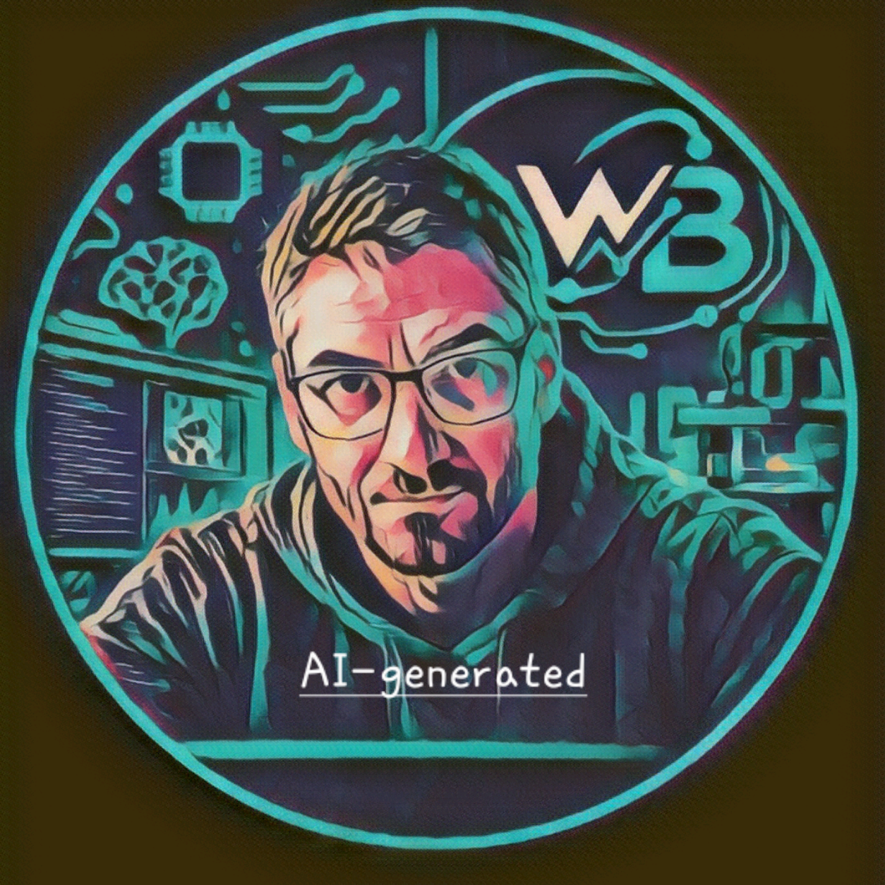

01
Instrumentation
Sensors, acquisition systems, electronics and experimental interfaces.
SENSORS · ELECTRONICS · ACQUISITION
From scientific questions to integrated experimental systems.

Scientific Engineer
Experimental Systems & Instrumentation
MSC / CNRS / Université Paris Cité
Designing experimental systems in which measurement, imaging and computation become active components of the scientific experiment.
My work sits at the interface between scientific questions and experimental engineering.
I design and integrate systems combining instrumentation, electronics, mechanics, optics, software, imaging and computation.
Real-time images and sensor data can become active experimental variables.
Information is acquired, processed, interpreted and transformed into experimental decisions.
The resulting architectures create dynamic experimental functions for measurement, characterization, automation and control.
The objective is to develop systems that can be adapted, transferred and replicated across scientific applications.
Technologies are integrated according to the experimental function that needs to be created.
Sensors, acquisition systems, electronics and experimental interfaces.
Quantitative imaging, computer vision, tracking and real-time observation.
Digital processing from simple numerical systems to embedded and FPGA architectures.
Extraction of relevant information from complex experimental observations.
Measurement transformed into decisions, feedback and experimental actions.
Complete experimental architectures from scientific requirement to operational system.
A trajectory progressively centred on the integration of technical expertise into scientific research.
Scientific instrumentation and experimental engineering within the CAROLS — Cooperative Airborne Radiometer Ocean and Land Studies — project.
INS U / CNRS →Integration and testing within a project platform, participation in project teams and definition of technical means required for experimental activities.
Responsibility for mechanical testing, optical testing and vacuum-related experiments.
OVSQ / PIT →Technical responsibility within the BASTA project, with instrumentation, integration, testing and collaboration around meteorological applications.
BASTA PROJECT →Joined the Laboratoire Matière et Systèmes Complexes in 2016, within the technical development activity associated with experimental research.
Development of experimental systems combining instrumentation, electronics, mechanics, optics, software and imaging.
Experimental engineering for problems involving rheology, dynamics and organisation of soft matter, complex materials and physico-chemical processes.
Technical responsibility for the associated experimental platform.
Development of architectures combining real-time imaging, sensor acquisition, computation, embedded systems, artificial intelligence and automation.
Applications across biology, soft matter, rheology, physico-chemistry and fluid mechanics.
Towards reusable experimental architectures in which observation, measurement, computation and control form modular functions that can be transferred to different scientific applications.
Selected developments connecting scientific questions with instrumentation and computational architectures.
Integrated architecture combining microfluidics, microscopy and real-time image analysis for adaptive biological experiments.
Coupling mechanical solicitation, magnetic fields, imaging and instrumentation for the study of complex soft-matter systems.
Imaging-based characterization linking morphological evolution with diffusion, adsorption and desorption kinetics.
Combination of ultrasound, electrical conductivity and imaging for real-time characterization of two-phase flows.
Experimental systems for the characterization of acoustic properties and dynamic behaviour of complex media.
Technical responsibility for an experimental platform dedicated to rheophysics, soft matter and physico-chemical characterization.